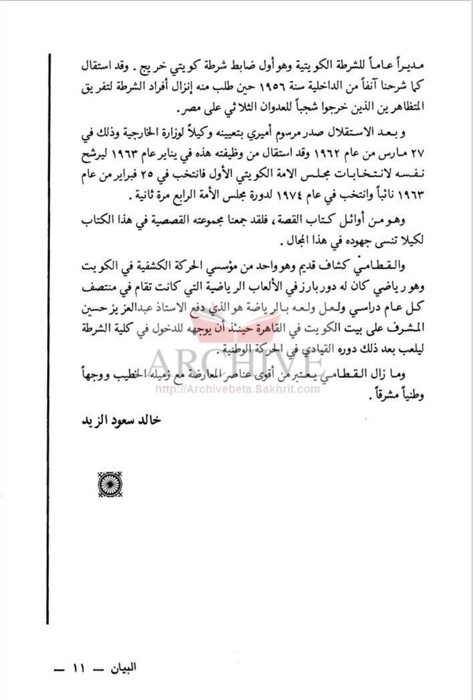

١ نوفمبر ١٩٨١ · مقال في مجلة البيان، العدد ١٨٨، ص ٤ إلى ١١، من الجزء الثالث من «أدباء الكويت في قرنين»
«جاسم القطامي والحركة الوطنية المعاصرة في الكويت»، بقلم خالد سعود الزيد
ما هي
ترجمة لجاسم عبدالعزيز القطامي: دراسته في الكويت، ثم كلية البوليس في القاهرة منذ ١٩٤٨، وتعيينه مديرا عاما للشرطة في نهاية ١٩٥٣، وهو أول ضابط شرطة كويتي خريج. وفي ١٩٥٦ رفض أن يرسل الشرطة على الجماهير المؤيدة لمصر واستقال، وينشر المقال كتاب استقالته كاملا. ويذكر خطابه في ثانوية الشويخ في ١ فبراير ١٩٥٩ نيابة عن الحركة الوطنية، ويصف القطامي بأنها عائلة كويتية عريقة من أكثر الناس خبرة بالبحر، ومنها الربان عيسى بن عبدالوهاب القطامي صاحب دليل المحتار. ويذكره كشافا قديما ورياضيا ومن أوائل كتاب القصة.
أهميتها
صورة كاملة لجاسم في حياته، مع نص استقالته سنة ١٩٥٦.
صور الصفحات



أسماء أخرى
المصادر
خالد سعود الزيد، «جاسم القطامي والحركة الوطنية المعاصرة في الكويت»، مجلة البيان (الكويت)، العدد ١٨٨، ١ نوفمبر ١٩٨١، ص ٤ إلى ١١
كيف كُتب هذا النص: الصفحتان ٥ و٦ ليستا في النسخة التي لدينا، والصفحة ٩ لا تذكر العائلة.
افتح في الموقع التفاعلي